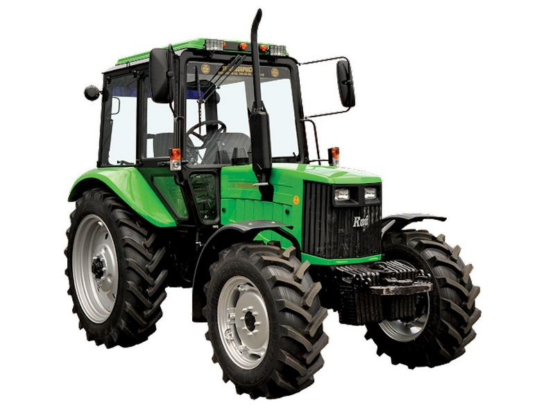

КИЙ-14820

КИЙ-14820 – це універсально-просапний колісний трактор, розроблений українським підприємством «Укравтозапчастина». Машина побудована на базі перевірених вузлів і агрегатів МТЗ (зокрема білоруської 12-ї серії), але адаптована під потреби українських аграріїв.
Конструктивною особливістю КИЙ-14820 є посилена рама та модернізована гідросистема, що забезпечує стабільну роботу з широким спектром навісного обладнання. Трактор має механічну синхронізовану трансмісію та повнопривідну схему (4х4), що гарантує високу прохідність на складних ґрунтах. Простора кабіна з покращеною термо- та шумоізоляцією забезпечує комфортні умови для оператора, роблячи цю модель одним із найбільш доступних і ефективних рішень у своєму класі потужності.
| Параметр | Значення |
|---|---|
| Клас тяги | 1.4 |
| Тип ходової частини | колісний |
| Колісна формула | 4х4 (повний привід) |
| Тип рами | напіврамна конструкція |
| Основне призначення | універсальні с/г, комунальні та вантажно-розвантажувальні роботи |
| Параметр | Значення |
|---|---|
| Модель | Д-243 (ММЗ) |
| Тип двигуна | 4-циліндровий дизель |
| Спосіб охолодження | рідинне (водяне) |
| Розташування циліндрів | рядне, вертикальне |
| Номінальна потужність | 60 кВт (81 к.с.) |
| Номінальні оберти | 2200 об/хв |
| Система пуску | електростартер |
| Питома витрата палива | 226-229 г/кВт·год (базова для Д-243) |
| Параметр | Значення |
|---|---|
| Муфта зчеплення | суха однодискова |
| Тип КПП | механічна |
| Кількість передач | 18 вперед / 4 назад |
| Діапазон швидкостей (вперед) | 1,9 – 33,4 км/год |
| Вал відбору потужності | задній незалежний, 540 і 1000 об/хв |
| Діапазон | Передача | Швидкість, км/год | Передаточне число | Тягове зусилля, кН |
|---|---|---|---|---|
| Знижений | 1 | 1,89 | 242,5 | 26,00* |
| Знижений | 2 | 2,52 | 181,8 | 26,00* |
| Знижений | 3 | 3,24 | 141,4 | 26,00* |
| Знижений | 4 | 4,25 | 107,8 | 26,00* |
| Знижений | 5 | 5,42 | 84,5 | 24,10 |
| Знижений | 6 | 6,55 | 69,9 | 19,90 |
| Знижений | 7 | 7,95 | 57,6 | 16,40 |
| Знижений | 8 | 8,90 | 51,5 | 14,70 |
| Знижений | 9 | 10,25 | 44,7 | 12,70 |
| Основний | 10 | 7,65 | 59,9 | 17,10 |
| Основний | 11 | 9,42 | 48,6 | 13,90 |
| Основний | 12 | 11,25 | 40,7 | 11,60 |
| Основний | 13 | 13,40 | 34,2 | 9,80 |
| Основний | 14 | 15,85 | 28,9 | 8,20 |
| Основний | 15 | 18,40 | 24,9 | 7,10 |
| Основний | 16 | 22,25 | 20,6 | 5,90 |
| Основний | 17 | 27,30 | 16,8 | 4,80 |
| Основний | 18 | 33,40 | 13,7 | 3,90 |
| Параметр | Значення |
|---|---|
| Тип коліс | пневматичні шини |
| Марка шин (передні/задні) | 11,2-20 / 15,5-38 |
| Радіус ведучого колеса | 0,78 м |
| Кількість коліс | 4 |
| Ведучі мости | обидва (4х4) |
| Режим | Витрата |
|---|---|
| Під час роботи з навантаженням | 12,0 – 16,5 кг/год |
| Під час холостих переїздів | 4,5 – 6,0 кг/год |
| Під час зупинок (холостий хід) | 1,0 – 1,4 кг/год |
| Параметр | Значення |
|---|---|
| Маса споряджена | 4000 кг |
| Довжина / Ширина / Висота | 4000 мм / 2000 мм / 2850 мм |
| Кліренс | 410 мм |
| Радіус повороту коліс | 4,5 м |
| Тип навісного пристрою | задній гідравлічний, триточковий |
| Вантажопідйомність навіски | 3200 кг |
| Об’єм паливного баку | 130 л |
| Параметр | Значення |
|---|---|
| Гідросистема | роздільно-агрегатна, продуктивність 45 л/хв |
| Регулювання навіски | силове, позиційне та висотне |
| Особливості конструкції | компактність, висока маневреність, сумісність з великою кількістю обладнання |